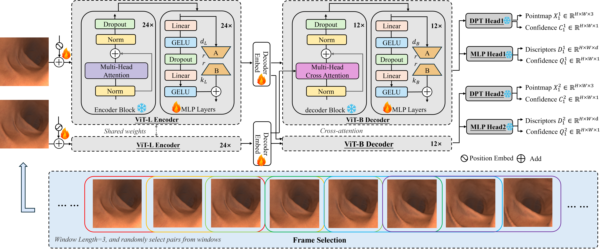
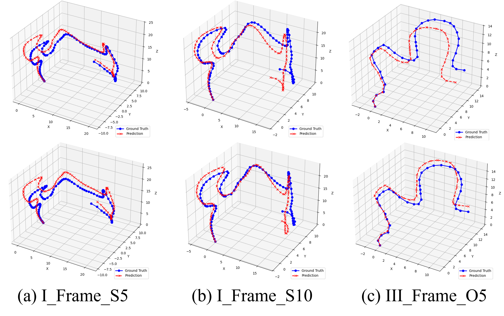
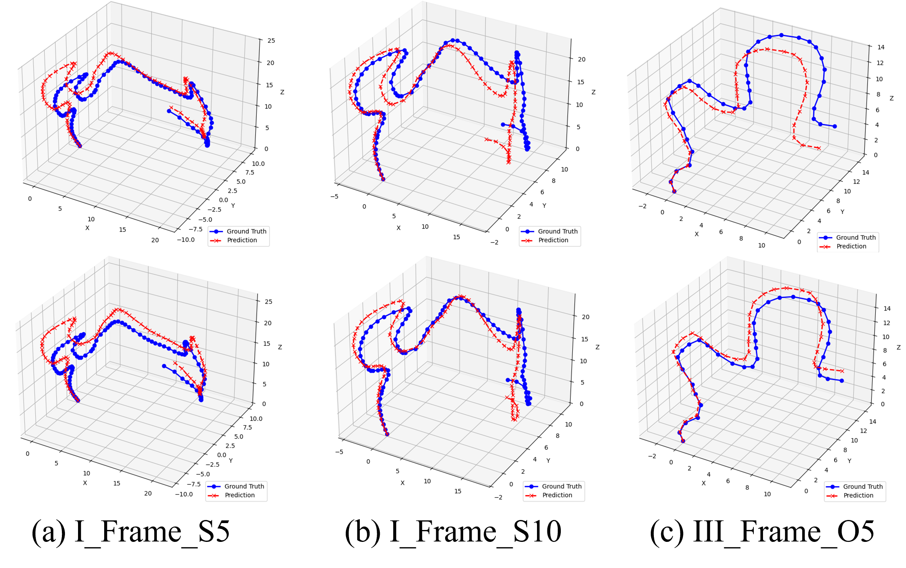

Abstract
Surgical scene reconstruction is pivotal for applications like intraoperative navigation and robotic surgery, yet existing methods often prioritize depth estimation over holistic 3D reconstruction, limiting global consistency in complex medical environments. We propose SurgMASt3R-SLAM, a novel pipeline for real-time 3D reconstruction of roughly static surgical scenes, leveraging a Vision Transformer-based MASt3R model fine-tuned with Low-rank Adaptation (LoRA) on medical datasets.
By integrating careful frame pair selection, our approach addresses challenges such as textureless surfaces. Quantitative evaluations on SimCol and zero-shot testing on C3VD demonstrate that SurgMASt3R-SLAM outperforms state-of-the-art methods in depth estimation, achieving superior metrics and robust local pose estimation.
Qualitative results further confirm high-fidelity point clouds with sharp edges. Despite some global trajectory drift, our method's ability to generate accurate, globally consistent reconstructions in real-time validates its potential for advancing surgical visualization and automation.
Method
SurgMASt3R-SLAM integrates MASt3R for feature extraction and pointmap matching, combined with tracking, local fusion, loop closure, and global optimization, to enable camera localization and construct a scene map. MASt3R takes two images as input and outputs point maps along with corresponding confidence maps and high-dimensional features for precise registration.
To adapt MASt3R for surgical scenes, we employ Low-rank Adaptation (LoRA) to efficiently fine-tune the model. We integrate LoRA adapters into the MLP (feed-forward) layers of the model, with r=8, α=16, and a dropout rate of 0.1. The selection of image pairs is critical - we select frame pairs with a temporal distance of less than 3 frames, applying a sliding window of length 3 across the entire video sequence to ensure MASt3R captures similar features between consecutive frames.
SurgMASt3R-SLAM Reconstruction Demo
Experimental Results
We evaluate SurgMASt3R-SLAM on three datasets: SimCol3D (28,776 training frames, 9,009 test frames), C3VD (22 colonic videos with 8 selected for testing), and SCARED dataset. Our method achieves superior depth estimation performance compared to existing approaches.
Quantitative Depth Estimation Results
| Method | Intrinsics | SimCol3D (Train & Test) | C3VD (Zero-shot) | ||||||||
|---|---|---|---|---|---|---|---|---|---|---|---|
| Abs Rel ↓ | Sq Rel ↓ | RMSE ↓ | RMSE log ↓ | δ ↑ | Abs Rel ↓ | Sq Rel ↓ | RMSE ↓ | RMSE log ↓ | δ ↑ | ||
| Monodepth2 | ✓ | 0.212 | 0.995 | 1.165 | 0.243 | 0.763 | 0.170 | 2.317 | 9.276 | 0.225 | 0.769 |
| Endo-SFM | ✓ | 0.200 | 0.918 | 1.127 | 0.238 | 0.778 | 0.164 | 2.232 | 9.311 | 0.217 | 0.770 |
| Endo3DAC | ✓ | 0.076 | 0.266 | 0.555 | 0.101 | 0.957 | 0.083 | 0.584 | 4.655 | 0.107 | 0.949 |
| SurgMASt3R-SLAM | ✓ | 0.046 | 0.038 | 0.343 | 0.113 | 0.976 | 0.083 | 0.748 | 3.254 | 0.839 | 0.953 |
Bold indicates best performance, underlined indicates second-best performance. ↓ indicates lower is better, ↑ indicates higher is better.
MASt3R Architecture with LoRA Adaptation
The structure of MASt3R with LoRA adaptor on the MLP layers of the encoder and decoder
Qualitative Results

 

Video Gallery
Surgical scene reconstruction results across different scenarios
Scenario B5
Scenario B10
Scenario B15
Scenario S5
Scenario S10
Scenario S15
Scenario O1
Scenario O2
Scenario O3
BibTeX
@inproceedings{surgmast3rslam2025,
title={SurgMASt3R-SLAM: Real-Time 3D Reconstruction for Surgical Scenes via LoRA-Fine-Tuned Vision Transformers},
author={Anonymous Authors},
booktitle={Proceedings of the IEEE International Conference on Robotics and Automation (ICRA)},
year={2025}
}